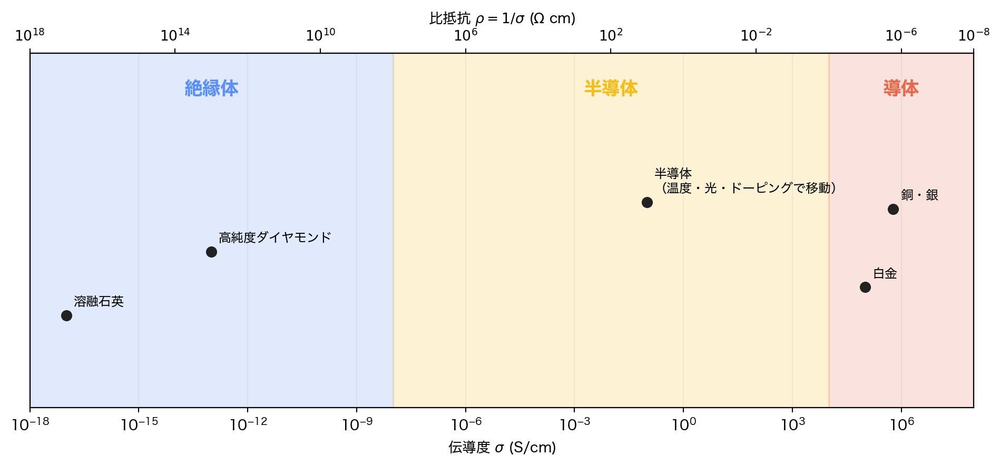

コードはこちら
import numpy as np
import matplotlib.pyplot as plt
plt.rcParams.update({
"font.family": "sans-serif",
"font.sans-serif": [
"Noto Sans JP", "Hiragino Sans", "Hiragino Kaku Gothic ProN", "DejaVu Sans"
],
"axes.unicode_minus": False,
})
fig, ax = plt.subplots(figsize=(10, 4.8))
ax.set_xscale("log")
ax.set_xlim(1e-18, 1e8)
ax.set_ylim(0, 1)
ax.set_yticks([])
ax.set_xlabel(r"伝導度 $\sigma$ (S/cm)")
# 分類境界は慣用的な目安。半導体の可変性を強調する模式図である。
regions = [
(1e-18, 1e-8, "絶縁体", "#5B8FF9"),
(1e-8, 1e4, "半導体", "#F6BD16"),
(1e4, 1e8, "導体", "#E8684A"),
]
for left, right, label, color in regions:
ax.axvspan(left, right, color=color, alpha=0.18)
ax.text(np.sqrt(left * right), 0.90, label, ha="center", va="center",
fontsize=13, weight="bold", color=color)
examples = {
"溶融石英": 1e-17,
"高純度ダイヤモンド": 1e-13,
"半導体\n（温度・光・ドーピングで移動）": 1e-1,
"白金": 1e5,
"銅・銀": 6e5,
}
ys = [0.26, 0.44, 0.58, 0.34, 0.56]
for (name, sigma), y in zip(examples.items(), ys):
ax.scatter(sigma, y, s=48, color="#222222", zorder=3)
ax.annotate(name, (sigma, y), xytext=(5, 7), textcoords="offset points",
fontsize=9, ha="left")
# 上軸は同じ位置に逆数の値を表示する。左ほど比抵抗が大きい。
sec = ax.twiny()
sec.set_xscale("log")
sec.set_xlim(ax.get_xlim())
rho_tick_exponents = np.array([-18, -14, -10, -6, -2, 2, 6, 8])
sec.set_xticks(10.0 ** rho_tick_exponents)
sec.set_xticklabels([rf"$10^{{{-exponent}}}$" for exponent in rho_tick_exponents])
sec.set_xlabel(r"比抵抗 $\rho=1/\sigma$ ($\Omega$ cm)")
ax.grid(axis="x", which="both", alpha=0.18)
fig.patch.set_facecolor("white")
ax.set_facecolor("white")
plt.tight_layout()
plt.show()